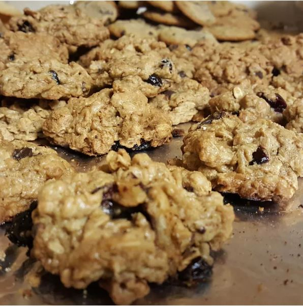

Canola Oil Oatmeal Raisin Cookies

This is an oatmeal raisin cookie developed to use canola oil instead of solid fats
Ingredients
- 1 cup canola oil
- 1 cup packed brown sugar
- 2 eggs
- 1 cup all-purpose flour
- 1/2 teaspoon baking soda
- 1/2 teaspoon salt
- 1 teaspoon ground cinnamon
- 1/4 teaspoon ground nutmeg
- 4 cups rolled oats
- 1 cup raisins
Directions
- Preheat oven to 350 degrees F (175 degrees C). Grease cookie sheets.
- In a large bowl, mix canola oil, brown sugar, eggs and vanilla until well blended.
- Combine the flour, baking soda, salt, cinnamon and nutmeg; stir into the sugar mixture.
- Mix in the oats and raisins last. Drop by rounded spoonfuls onto the prepared cookie sheet.
- Bake for 10 to 12 minutes in the preheated oven.
- Allow cookies to cool on baking sheet for 5 minutes before removing to a wire rack to cool completely.
Enjoy
Return to main page